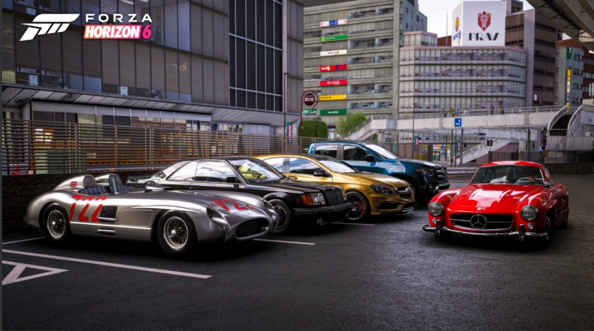

Complete vehicle lineup of Forza Horizon 6, including street cars, drift cars, supercars and off-road vehicles
Forza Horizon 6 features a massive collection of licensed vehicles from major global manufacturers, covering street cars, drift-specific models, off-road trucks, supercars and classic vintage cars. Every vehicle has unique performance stats suitable for different tracks and game modes.
Barn Finds are special hidden classic cars scattered across the Japan map. These rare vehicles cannot be purchased directly and must be discovered through exploration. Here are all barn find locations:
Certain exclusive vehicles can only be obtained through special methods:
Understanding upgrade priorities helps maximize your vehicle potential:
Professional Car Tuning Setups | Best Cars For Each Track Type | Barn Find Locations Map